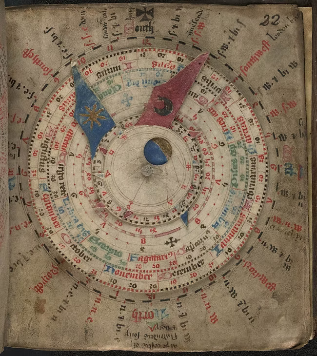

A Digital Study of Early Modern European Calendrical Mechanisms
History of Science · Digital Humanities
What I Will Do
- Digital study of Early Modern European calendrical mechanisms
- Case study: A 15th-century mechanical volvelle
- Research question: To what extent were the European calendrical mechanisms influence by Islamic calentrical design and mathematical theory?
What Is a Volvelle?

- A rotating calendar device with discs
- Made of paper, parchment, wood, or metal
- Often in books/codices
How Does a Volvelle Work?
Source: https://www.youtube.com/watch?v=cdgFxuw5I8M
Why I Am Interested

- Saw a sophisticated volvelle in museum.
- Calendar:
- History of science: Astronomy, mathematics.
- Material culture.
- From diverse cultural traditions: European, Islamic, Chinese, etc.
Why You Should Be Interested
- Calendars are part of everyday life
- Intersection: history of science, technology, and common knowledge
- Beautiful early interactive books & science instruments
Methodology
Historical Methodology
- Material history of scientific instruments
- Comparative study of calendrical knowledge traditions
- Hermeneutic analysis of diagrams + explanatory texts
- On-site consultation of museum collections
Technical Methodology
- Digital Visualization: SVG/Canvas, geometric modelling, JS animation
- Image Processing: extract circular diagrams, edge detection, object detection
- Text Analysis: small corpus, keyword extraction, clustering, topic hints
Digital Reconstruction
Credit: Richard Wymarc | Source: astrolabeproject.com
Expected Outputs
- Digital reconstruction of a volvelle
- Dataset of historical calendrical diagrams
- Analytical study of volvelle’s time encoding
- Reflections on digital methods in history of science